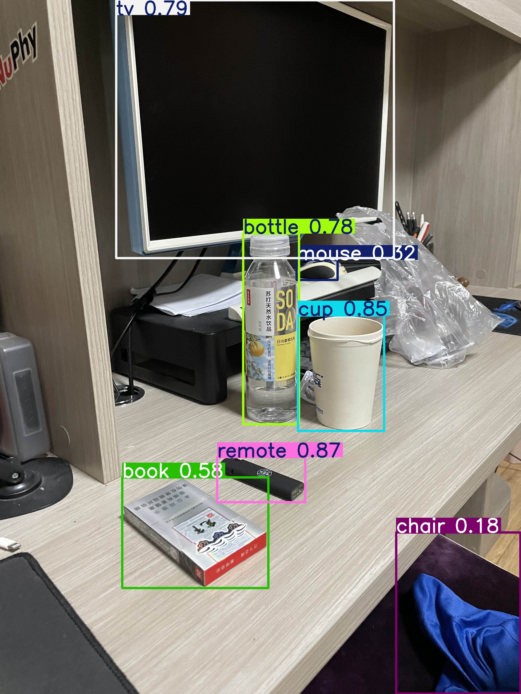

Yolo V8
Ultralytics YOLOv8 和 Darknet 是与 YOLO（You Only Look Once）目标检测模型相关的两个不同实现。它的主要特点是将目标检测问题视为回归问题，直接在图像上预测边界框和类别。
relations
YOLO（You Only Look Once）
YOLO 是一种实时目标检测系统，由 Joseph Redmon 等人提出。它的主要特点是将目标检测问题视为回归问题，直接在图像上预测边界框和类别。
Darknet
开发者：Joseph Redmon。
实现：YOLO 最早由 Joseph Redmon 在 Darknet 框架上实现。Darknet 是一个用 C 和 CUDA 编写的开源神经网络框架，专门用于目标检测。
版本：Darknet 实现了 YOLO 的早期版本，如 YOLOv1、YOLOv2 和 YOLOv3。
Ultralytics YOLOv8
开发者：Glenn Jocher。
实现：Ultralytics 是一个基于 PyTorch 的开源库，最初是为了实现 YOLOv3 和 YOLOv4。后来，Ultralytics 推出了自己的版本，如 YOLOv5 和 YOLOv8。
特点：Ultralytics 的实现更加现代化，利用 PyTorch 的灵活性和易用性，提供了更高的可扩展性和更丰富的功能，如更容易的模型训练和部署、更高的速度和精度等。
useage
现在使用 Ultralytics YOLOv8 是更好的选择，因为其在快速的迭代，并且有非常详细的文档。目前 yolo 模型分为：
Train mode: Fine-tune your model on custom or preloaded datasets. 训练调优用
Val mode: A post-training checkpoint to validate model performance. 检测模型用
Predict mode: Unleash the predictive power of your model on real-world data. 推理模型
Export mode: Make your model deployment-ready in various formats. 导出模型使其能在其他硬件平台运行，或者提升模型在 CPU 下运行的效率
Track mode: Extend your object detection model into real-time tracking applications. 物体检测的加强版本，用于在一段视频中跟踪物体
Benchmark mode: Analyze the speed and accuracy of your model in diverse deployment environments. 检测模型用
想快速学习读下， https://docs.ultralytics.com/quickstart/#install-ultralytics 这篇文章即可。
使用pip 进行依赖安装:
pip install ultralytics
第一次运行会下载预训练好的模型，我尝试过检测一段 1 分钟的视频结果失败了，应该是因为内存不够。另外 Ultralytics YOLO 利用 GPU 加速是需要使用 Nvida 的显卡才可以的。苹果电脑基本可以告吹了。
from ultralytics import YOLO
model = YOLO("yolov8n.pt")
model.predict(
"/Users/van/Desktop/yolo",
# "path/to/video.mp4",
# stream=True
save=True,
imgsz=640,
conf=0.15,
)
effect

训练调优
TODO